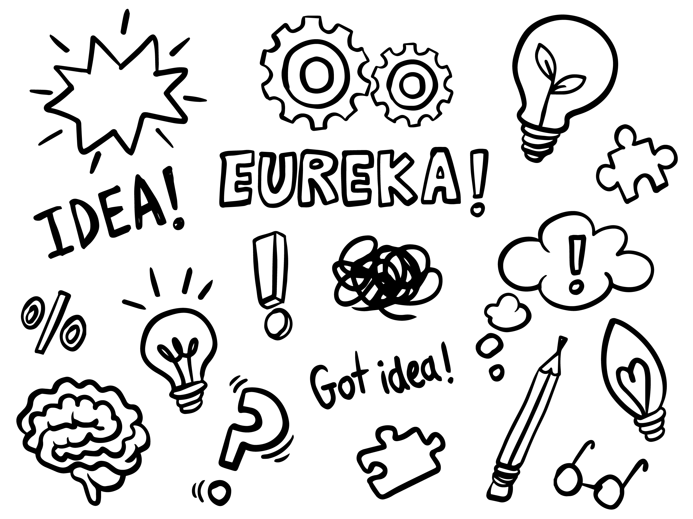

Somos a 'Unijorge Helper', uma iniciativa dedicada a auxiliar e orientar os estudantes da Universidade Jorge Amado em seus estudos! Atualmente fazemos suporte apenas para o bacharelado em Engenharia da Computação.
Reconhecemos que muitos estudantes enfrentam desafios ao conciliar os estudos com o trabalho, o que pode consumir até 8 horas diárias e dificultar a revisão e o estudo extraclasse. Logo, também compreendemos que esses alunos frequentemente têm apenas o horário do almoço ou talvez uma hora após as aulas para revisar o conteúdo. Assim, estamos aqui para tornar esse tempo mais produtivo e ajudá-los a alcançar o sucesso acadêmico.
Com isso em mente, decidimos criar um site que direcione esses alunos diretamente para aulas online, livros, cursos, entre outras coisas, as quais cobrem os mesmos temas abordados em sala de aula.
Apresentamos uma interface intuitiva, organizada por semestres e suas respectivas disciplinas. Convidamos você a explorar tudo o que temos a oferecer!
Se você tiver alguma dúvida, sugestão ou desejar entrar em contato conosco: